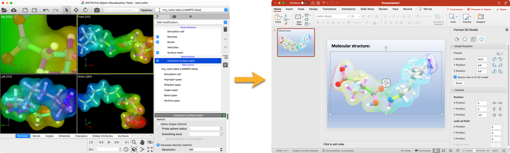

glTF file exporter pro
New in version 3.10.0.
This file writer exports the entire visualization scene from OVITO to the glTF format, which is a universal file format for 3d models. It can be imported in other applications such as Blender or PowerPoint, or it can be embedded into web pages.
{kind=link}
glTF is a triangle mesh-based format, which means round objects in OVITO, such as particle spheres and bond cylinders, must be converted to triangle meshes before they can be exported. The parameter Mesh resolution level controls the number of triangles used to approximate the surface of round geometries. The higher the resolution, the more triangles are generated and the smoother the surface will look. The default value of 3 is usually sufficient for most applications.
Keep in mind that applications such as PowerPoint are not designed to handle complex 3d models with many objects and they do not employ optimized rendering techniques for particle-based models like OVITO does. That’s why they may be unable to display scenes containing more than a few tens of thousands of particles or bonds.
Note
The OVITO file exporter produces binary glTF files with the .glb file extension.
This is the recommended format for glTF files, because it is more compact than the text-based .gltf format.
Publishing glTF models on the web
You can use the <model-viewer> web component or other, similar tools to embed glTF 3d models into web pages.
Here is an example of how to embed the OVITO logo model into a web page: Click and drag to rotate the model.
Note that the 3d viewer component works only in the online version of this document due to web browser security restrictions. In the offline version of the OVITO docs, you will see only a static image of the model.
Python parameters
If you export a scene to the glTF file format with the export_file() Python function, the following specific keyword parameter is available:
- export_file(None, file, "gltf", mesh_resolution = 3, optimize_size = False, ...)
- Parameters:
mesh_resolution (int) – A numeric value in the range 1-5, which controls the number of triangles used to approximate the surface of round geometries. The higher the resolution, the more triangles are generated and the smoother the surface will look.
optimize_size (bool) –
If set to true, the exporter will attempt to reduce the size of the glTF file by reusing particle meshes (object instancing). However, this typically leads to slower rendering speeds, because most rendering applications are optimized for a few large meshes and not a large number of small objects.
New in version 3.10.4.